Spell icons, batch 2: Mabel, Madame Cleaver, Pim and Pom, Pom, Grandma Ironknit, Sir Whiskers, Mr. Ledger, Nyx, Barry Cloudsley
2026-11-16 · drawn with VectorCraft in the family of the sample (docs/icons/sample), version B (the picture at 118%, over the octagon's edge). Today's icon on the left, the new one on the right, each drawn the way the game draws it: a 128 px picture brought down to 64, 48 and 32 px. The last of each set is the new one in grey.
What I see
One sign per hero: Mabel's gold-tipped claws and the Deep's soil, the Feastmistress's ember-edged cleaver, iron pot and covered dishes, the twins' bark and leaf (Pim amber, Pom blue), the Weaver's silver needles and glowing rose yarn, the Lynx Duelist's tawny gold and his nine lives as gems, the Tithe-Keeper's vellum and red wax seal, Nyx's dagger and the moon, the Sky Augur's clouds and fronts.
Cartoon left behind: the sweater is a knit thrown over you, Mr. Biscuit a grey cat springing out of the wool (not a cat face), the referee-style pencil and papers a sealed invoice, a notice and a stamp, the weather-TV sun a front drawn as the augur's chart draws it.
Weakest: none fails now, but Pom's three icons are only seen after a Tag Out (the bar below is Pim's). Redrawn after the last review (2026-11-16): Mabel's Sinkhole (R) was a second hole like her Dig (W); it is now the floor breaking into the dark, seen from the side. Pim's Charge (W) was his acorn helm and read as an acorn; it is now a wedge of bark driving down the lane. Nyx's Shadow Double (E) was two blocks; the figures now have hoods, shoulders and a ragged hem, and the bright one a dagger.
Redrawn after a first look: Mabel's Dig (claws over the hole read as horns) and Sinkhole (cracks over the pit read as a broken plate), the Feastmistress's smoke (grey puffs read as stones), the Weaver's Sweater (read as a basket) and Mr. Biscuit (read as a ghost), Sir Whiskers's Scratch (read as a feather), Nyx's Smoke Veil (two eyes in the smoke made a rock monster).
Pom has three icons: Tag Out is the same spell for both twins and uses Pim's.
At 32 px
Each spell: today · new · new in grey · new under the desktop bar's key letter · new in the phone's round slot; brought down to 32 px, then shown twice larger.
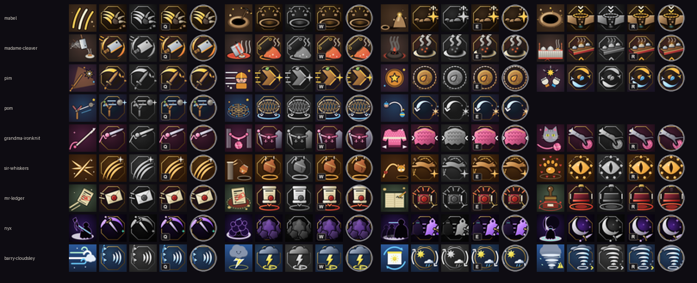
Mabel the Deepdelver
Proposed row Deep / lantern (src/kits/mole.ts): the lantern crystal's amber, a cave-crystal teal accent; soil foils.
corehotbodyaccentdark
SpellTodayNew
QClawA swipe of her digging claws, 2.5 m in front of her: 68 damage.
WDigA hole at a spot (6 m), opening after 0.7 s, 1.5 m in radius. It stays 8 s, three at most. Whoever walks in falls: rooted 0.8 s, then slowed. She walks across her own.
EMole RunShe dives (0.3 s) and tunnels up to 7.2 m in 1.2 s, 40% faster than she walks, a mound on the surface showing where. Nothing can hit her and she cannot cast. She pops up: 60 and a 0.5 s knock-up within 1.5 m.
RSinkholeThe ground drops under the enemy: a pit 4 m in radius at their spot (9 m, sight needed), 1.3 s warning. Whoever is inside takes 115 and is rooted 1 s.
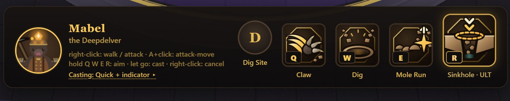
The spell bar, desktop (1280 wide)
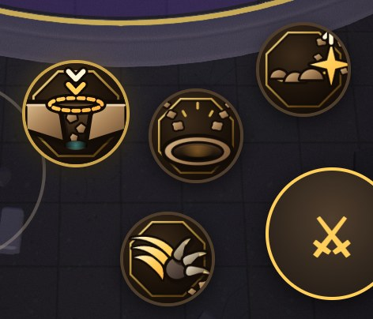
Phone (375 wide)
Madame Cleaver the Feastmistress
Proposed row Feast / ember (src/kits/chef.ts): the cleaver's ember edge, her crimson, a herb green.
corehotbodyaccentdark
SpellTodayNew
QThrown CleaverShe throws her cleaver (9 m): 66 damage. It sticks in the floor where it stops, and a dish plops out there.
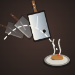
WHot SoupA huge pot drops at a spot (8 m) and tips over after 1 s: 56 damage and a 1.5 s slow within 2.5 m, and a dish in the middle.
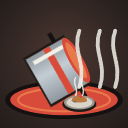
EBurnt OfferingShe lobs a burnt dish to a spot (8 m). Black and smoking: whoever walks over it eats 60 damage and a 0.8 s stun. On her it does nothing.
RDinner Is ServedAn 8 m table rises in front of her for 5 s: real cover, 150 HP, with three dishes on it. Whoever stands at it for 1 s eats them: +25% damage for 5 s, and for her 50 HP.
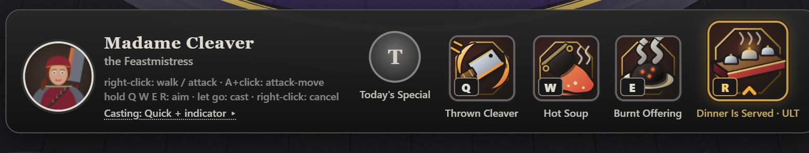
The spell bar, desktop (1280 wide)
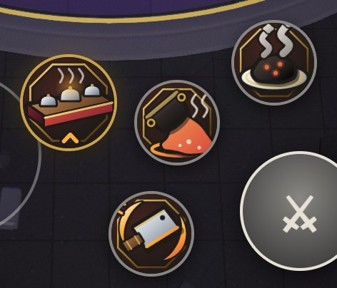
Phone (375 wide)
Pim and Pom the Changeling Twins
Proposed row Changeling (src/kits/twins.ts): Pim's amber with Pom's blue as the accent, bark and leaf. Tag Out is one spell for both twins: its icon is Pim's.
corehotbodyaccentdark
SpellTodayNew
QBonkA wooden sword swings across a 3 m cone in front of him: 72 damage. Stay out of 3 m.
WChargeHe lowers his head and runs 5 m toward the aim after a short wind-up: 56 damage to whoever is in the lane when he arrives.
EShield UpA little toy shield: 50 shield for 2 s. Wait it out, or take the space.
RTag OutSwap twins: a 0.5 s hold while the other pops out of the backpack. The one who comes in has the next spell ready 2 s sooner. The twin who rests heals 6 HP a second.
The spell bar, desktop (1280 wide)
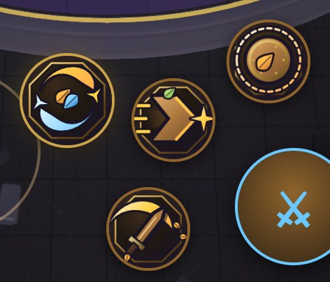
Phone (375 wide)
Pom the Changeling Twins
The Changeling row turned round: Pom's blue body, Pim's amber accent. (The spell bar below is Pim's: a duel starts on him.)
corehotbodyaccentdark
SpellTodayNew
QPebbleA pebble from the slingshot (9 m, quick): 66 damage. Sidestep it.
WSnareA net drops on a spot (7 m, 1 s warning, 2 m round): 30 damage and a 1 s root. Leave the circle.
EBackflipA hop 4 m toward the aim. She leaves a party popper where she stood: after a moment it goes off for 40.
RTag OutSwap twins: a 0.5 s hold while the other pops out of the backpack. The one who comes in has the next spell ready 2 s sooner. The twin who rests heals 6 HP a second.
Grandma Ironknit the Weaver
Proposed row Spindle / rose (src/kits/yarn.ts): rose yarn, the Spindle court's silver as the accent.
corehotbodyaccentdark
SpellTodayNew
QKnitting NeedleA needle as long as a sword (9 m, 22 m/s, 0.3 s wind-up): 62 damage. Step off its line.
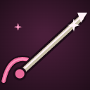
WCast OnTwo charges, one back every 6 s. She ties a line of yarn from her to the nearest cover the way you aim (9 m), or 9 m out into nothing. Three at most. Walk across one and you are stuck 0.4 s, then slowed 1 s. One hit cuts it.
ESweaterShe throws a sweater on you (7 m, 0.5 s, needs sight when it lands): slowed 2 s, then it shrinks: 50 damage. Reach cover first.
RMr. BiscuitA big grey cat springs out of a ball of wool at her feet: 200 HP, 6 s, 4.5 m/s. He runs at you and sits on you: 25 damage a second and a slow. Shoot him, or lead him off: he stops to play with a cut line.
QScratchA 2.5 m claw in front of him: 64 damage. His next attack within 2 s is ready at once.
WKnock It OverWith cover within 4 m of him, a pot falls on the spot at 9 m after 0.7 s (1.5 m): 60 damage and a 0.5 s stun. In the open it does nothing.
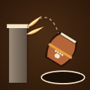
ECat LeapSpends the life he is on: leaps 7 m onto you for 60 damage, then cannot cast for 0.4 s. Not on his last life.
RLand on My FeetFor 4 s, the next life he would lose is not lost: he lands on his feet and leaps 3 m away. His attacks are 30% faster until then.
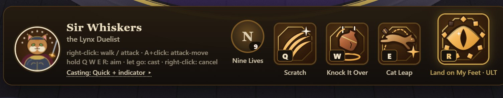
The spell bar, desktop (1280 wide)
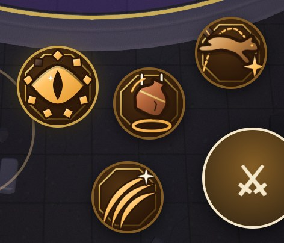
Phone (375 wide)
Mr. Ledger the Tithe-Keeper
Proposed row Tithe / seal (src/kits/ledger.ts): vellum, the wax seal's red, his ember eyes as the accent.
corehotbodyaccentdark
SpellTodayNew
QInvoiceA paper flies (9 m): 72 damage that goes on the target's tab instead of hurting now. The tab comes due 3 s after the last charge, at +40%.
WLate FeeAt a spot (9 m), after 1 s: a notice lands on a 2.5 m circle. 62 damage on the tab, and slowed 1.5 s.
ECall It InThe ledger is slammed shut: the tab on the enemy comes due now, without the interest. Needs no target, and a tab to call.
RForeclosureA huge stamp falls at a spot (9 m) in 0.8 s. Seen in the 2.2 m circle, the target pays their whole tab now at +60%, and takes 20% more from him for 3 s. Cover saves them.
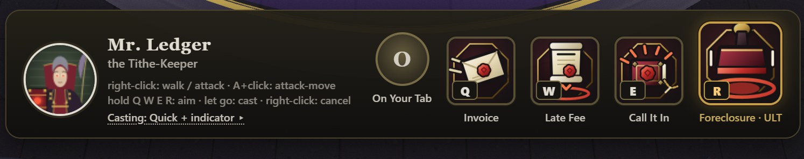
The spell bar, desktop (1280 wide)
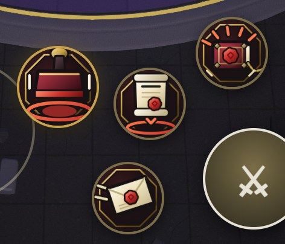
Phone (375 wide)
Nyx the Umbral Stalker
The art bible's Shadow row, the moon as its foil.
corehotbodyaccentdark
SpellTodayNew
QUmbral CutClick an enemy within 2.5 m. After 0.35 s a dagger strike lands on where it stands (within 3.2 m): 58, 93 from behind (its back 120 degrees).
WSmoke VeilA 3 m cloud of dark smoke at her feet for 3 s. Inside it she counts as faded even mid-fight, and an enemy inside is blinded.
EShadow DoubleShe darts 4 m, through cover if it is in the way. A shadow copy (40 HP, 2.5 s, 15 per 0.9 s) stays where she stood and walks at the enemy.
RNightfallFor 5 s the arena darkens. She moves 25% faster and deals 20% more, and fades again 0.8 s after each hit she lands. When it ends she is slowed for 1 s.
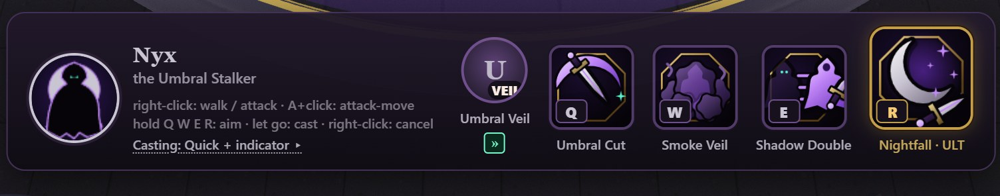
The spell bar, desktop (1280 wide)
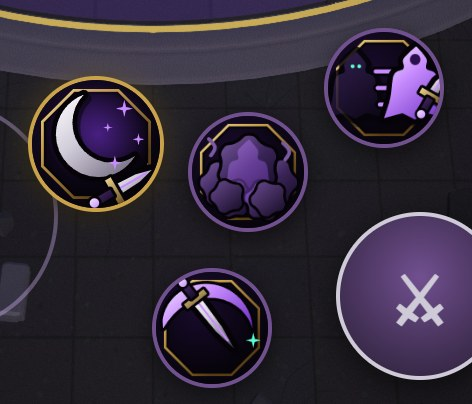
Phone (375 wide)
Barry Cloudsley the Sky Augur
Proposed row Augury (src/kits/weather.ts): cloud white, sky blue, the sun's yellow as the accent.
corehotbodyaccentdark
SpellTodayNew
QCold FrontA gust (9 m): 64 damage. In Rain it slows for 1.5 s. In Wind it knocks the target back further.
WLightning RiskA cloud marks a spot (9 m): after 0.8 s lightning strikes it, 64 damage within 1.5 m.
EForecast UpdateThe forecast changes now, to the other weather. It costs a Cold Front cooldown of 6 s. Cannot be cast in the last 0.6 s before a change.
RSevere WarningA tornado at a spot (9 m): after a 1 s warning it walks at the enemy at 2.5 m/s for 4 s, 25 damage a second within 2 m. Walk away: you are faster.
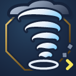
The spell bar, desktop (1280 wide)
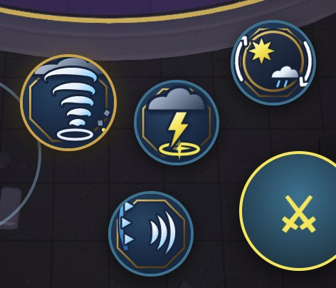
Phone (375 wide)
File sizes
The SVGs the game loads (public/icons/spells/), only when a hero's slots are first drawn.
Icon
SVG
gzipped
mabel-e
8.8 KB
1.9 KB
mabel-q
17.7 KB
4.0 KB
mabel-r
6.7 KB
1.4 KB
mabel-w
9.8 KB
2.1 KB
madame-cleaver-e
8.5 KB
1.8 KB
madame-cleaver-q
9.7 KB
2.3 KB
madame-cleaver-r
7.0 KB
1.5 KB
madame-cleaver-w
6.3 KB
1.7 KB
pim-e
4.6 KB
1.1 KB
pim-q
8.7 KB
2.0 KB
pim-r
9.2 KB
2.2 KB
pim-w
5.2 KB
1.2 KB
pom-e
6.0 KB
1.6 KB
pom-q
5.7 KB
1.2 KB
pom-w
9.9 KB
1.3 KB
grandma-ironknit-e
6.1 KB
1.2 KB
grandma-ironknit-q
3.6 KB
1.0 KB
grandma-ironknit-r
7.7 KB
2.2 KB
grandma-ironknit-w
6.2 KB
1.3 KB
sir-whiskers-e
6.1 KB
1.8 KB
sir-whiskers-q
10.0 KB
2.5 KB
sir-whiskers-r
7.8 KB
1.5 KB
sir-whiskers-w
4.9 KB
1.3 KB
mr-ledger-e
9.8 KB
1.9 KB
mr-ledger-q
5.2 KB
1.3 KB
mr-ledger-r
5.2 KB
1.1 KB
mr-ledger-w
7.0 KB
1.5 KB
nyx-e
8.5 KB
2.0 KB
nyx-q
6.5 KB
1.7 KB
nyx-r
6.0 KB
1.6 KB
nyx-w
12.1 KB
2.9 KB
barry-cloudsley-e
5.9 KB
1.3 KB
barry-cloudsley-q
11.7 KB
2.5 KB
barry-cloudsley-r
17.1 KB
3.8 KB
barry-cloudsley-w
3.5 KB
1.0 KB
All 35
274.7 KB
62.6 KB
Files: the drawings pipeline/icons/vectorcraft/draw/<hero>.py, the shared rules vclib.py, the runner make.py, this page page.py (batches.json holds the notes).